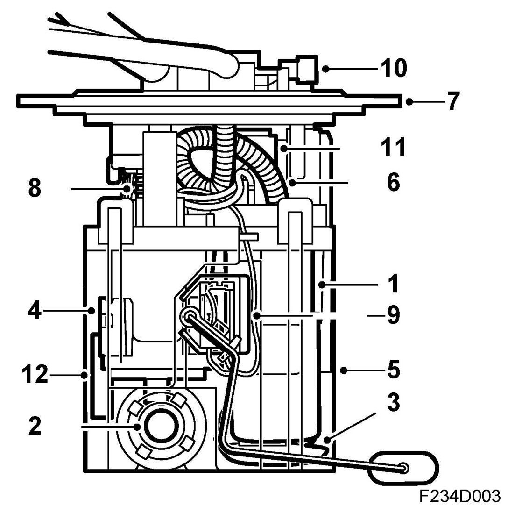
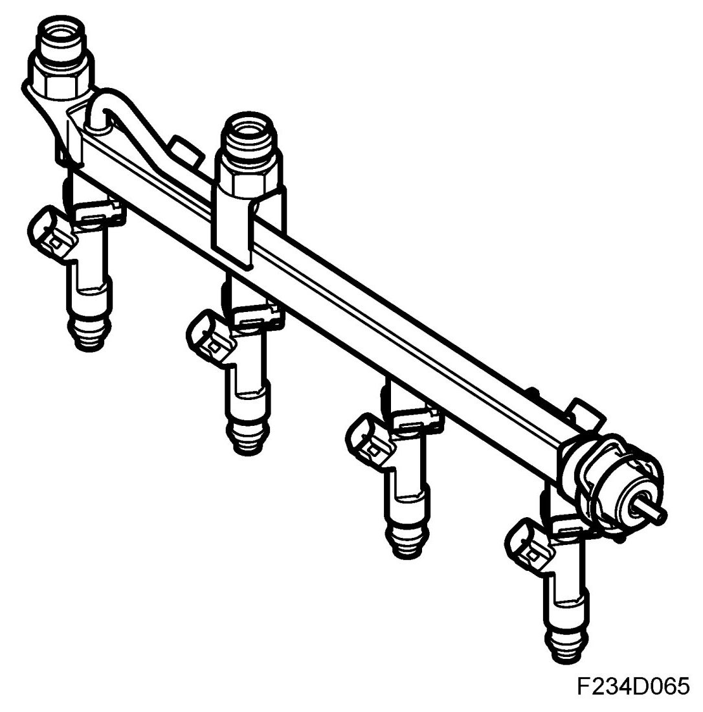
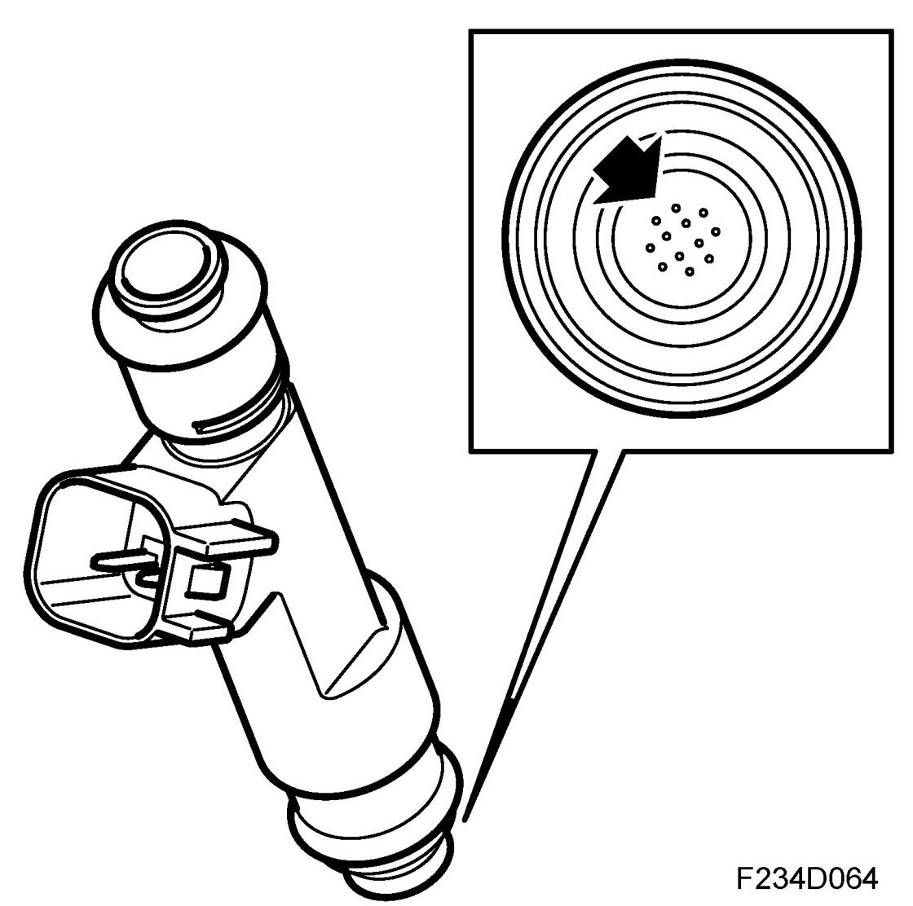
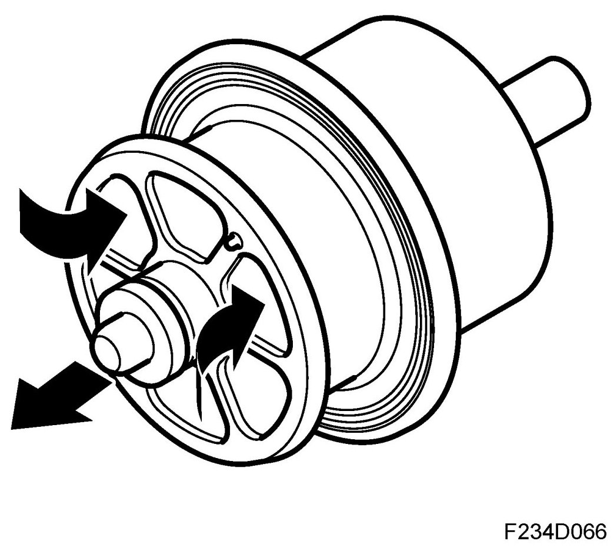
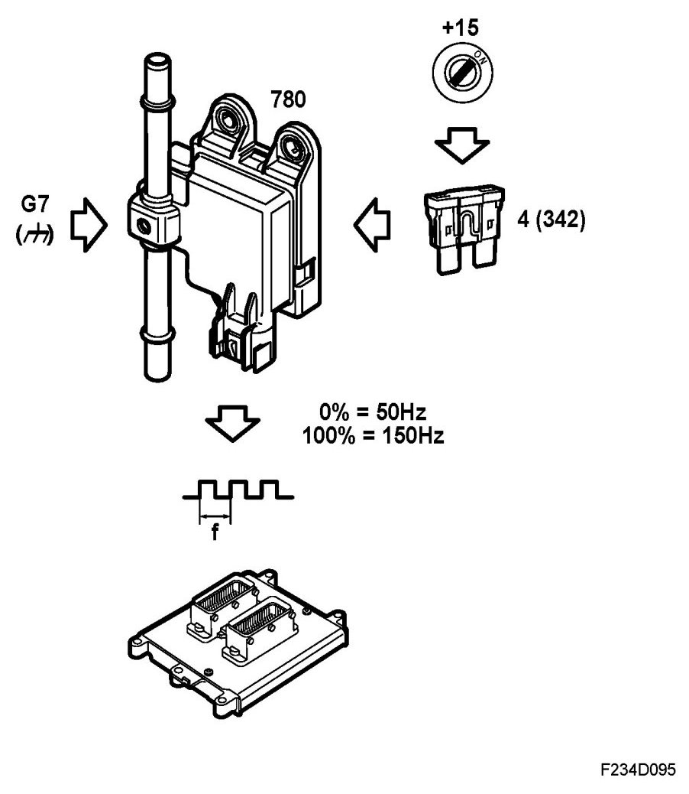
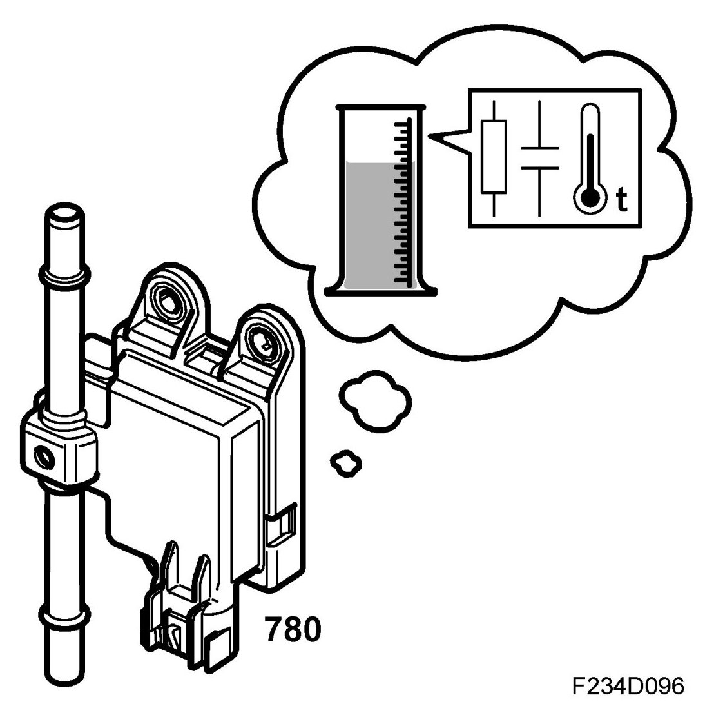
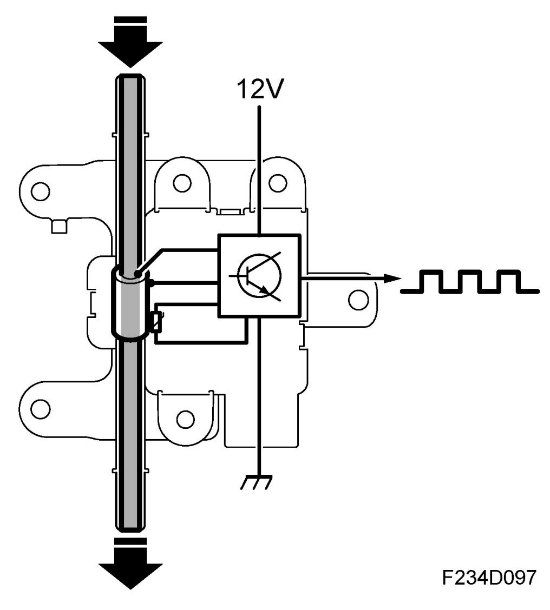

Fuel Pump: Description and Operation
Detailed Description
Fuel pump

1. Pump
2. Ejector
3. Primary filter, suction side
4. Filter, delivery side
5. Reservoir
6. Pump delivery line
7. Pump cover
8. Spring element
9. Level sensor, fuel (46)
10. Pressure sensor, EVAP (585)
11. Float valve, upper
12. Float valve, lower
The fuel pump is located inside a plastic reservoir that is clamped between the top and bottom of the fuel tank and located centrally by protrusions in the bottom of the tank and at the top by the pump cover. The pump is mounted in the tank by screwing the pump cover into a screw ring on the outside of the tank. Movement in the tank is taken up by the fuel pump spring element.
An ejector is "driven" by the flow of fuel from the delivery line via a T-piece. The pump is an electric turbine pump. The ejector is used to ensure that the pump is supplied with fuel. The location of the pump in the reservoir guarantees the fuel supply when cornering and accelerating even when there is only a small amount of fuel left in the tank.
The reservoir is designed so that a sufficient fuel level is guaranteed in the fuel pump.
A non-return valve on the pump delivery side prevents the pressure in the fuel line dropping as soon as the engine is turned off. The non-return valve on the pump return side prevents the fuel returning the wrong way in case the car should roll over.
The fuel level sensor in the tank is mounted on the fuel pump reservoir via a jointed arm.
Fuel distribution pipe

The fuel rail meters equal amounts of fuel to all the injectors. It also acts as a pressure equalizer. In relation to the amount of fuel consumed during each injection, the fuel rail has sufficient capacity to prevent variations in pressure. The design and construction of the fuel rail enables a simple method of fitting the injectors, which are connected directly to it.
Also connected to the fuel rail are the fuel lines and fuel pressure regulator.
Injectors

The injectors are connected directly to the fuel rail and are mounted in heat insulated bushes in the cylinder head ahead of the intake valves.
An injector comprises a valve body and nozzle with magneto armature. The valve body contains a magnetic coil and a guide for the nozzle. The injectors are controlled electromagnetically and are opened and closed by electrical impulses from the engine control module.
To achieve optimum combustion and thereby cleaner exhaust gases, the injectors have air-flushed jets to give a good distribution of the fuel.
The nozzles are secured by clips to the fuel rail. It is essential with regard to emissions and engine performance that the nozzles are positioned and secured correctly.
Pressure regulator

The pressure regulator is mounted on the end of the fuel rail.
The regulator maintains a constant differential pressure between the fuel and the intake manifold. In this way, the amount of fuel injected can be determined solely by the electromagnetic injector timing.
The pressure regulator is a diaphragm-controlled overflow valve set for 3.0 bar. It consists of a metal housing divided into two chambers by a press-fitted diaphragm. In one of the chambers there is a spiral spring that presses against the diaphragm while fuel flows through the other chamber.
When the preset pressure is exceeded, a valve controlled by the diaphragm exposes an opening to the return line through which superfluous fuel can flow back to the fuel tank.
The pressure regulator spring chamber is connected to the intake manifold after the throttle body via a hose. This means that the pressure in the fuel system is affected by the absolute pressure in the intake manifold and the drop in pressure across the injectors is constant at each inlet pressure.
General

Cars with 4WD in BioPower version (intended for the EU market) are equipped with an ethanol sensor that calculates the current ethanol content in the fuel (0-100%) by measuring a number of different properties of the fuel. The sensor is mounted to the bulkhead in the engine bay on the right-hand side. It is connected in the fuel line with quick couplings.
The ethanol sensor replaces the ethanol adaptation software function. The reason for this is that BioPower cars in the 4WD version have a saddle tank, which means that it can take a long time for the fuel to be remixed when refuelling. This would be a problem in the form of a very long time required for the alcohol adaptation when the fuel in the tank of a given ethanol content (e.g. 5%) is mixed with a fuel with high ethanol content (e.g. 85%). By continuously measuring the fuel's ethanol content in the delivery line to the fuel rail a correct value for the fuel's ethanol content is obtained directly and without delay. In the event that the sensor is diagnosed as faulty or unreliable then the ethanol adaptation software function is used as a replacement function.
The ethanol sensor is supplied voltage with +15 from fuse 8 in the engine bay's electrical centre 727 and is grounded via crimp J212 in grounding point G1. A signal whose frequency forwards the information to the ECM is sent from the sensor. The waveform of the signal is the square type. Signal frequency varies with the fuel's ethanol content, 0% ethanol content produces 50 Hz, while 100% ethanol content produces 150 Hz. If water content that is too high is detected in the fuel then the output signal's frequency becomes 190 Hz. In the event of an internal fault in the sensor the frequency is set to about 170 Hz.
Function

The ethanol content can be calculated by measuring the following properties of the fuel:
- Conductance
- Capacitance
- Temperature
The sensor has no moving parts and is the flow sensor type. It consists mainly of a measuring element located in the fuel throughput, a temperature sensor and a microprocessor.
The measuring element consists of two concentrically positioned tubes, to which electrical connections are connecting. The sensor's electronics measure the resistance between the outer and inner tube. By means of the measuring element's physical dimensions being known the conductivity (conductive capacity) of the fuel can be calculated. The sensor also measures the capacitance between the outer and inner tube and uses the fact that the capacitance between two electrodes varies with the medium (different dielectric constants) between them. The temperature is measured by a sensor built into the ethanol sensor.
Both conductance and capacitance vary when comparing pure petrol with ethanol or any combination in between. This result, offset by fuel temperature, means the microprocessor can calculate the fuel's ethanol content.
If the fuel's conductance exceeds a given limit then the calculation will be unreliable and diagnostic trouble code P2269 is generated. The traditional ethanol adaptation is now used as a substitute value.
